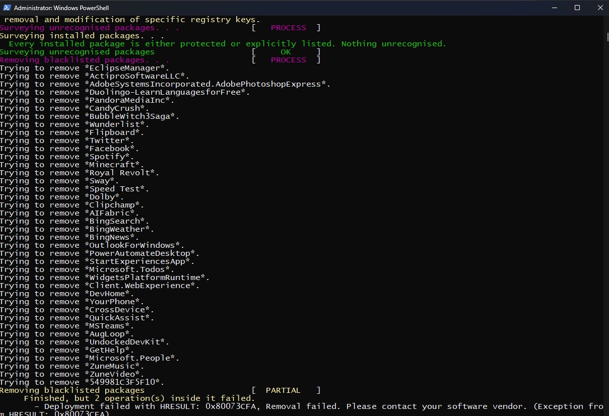
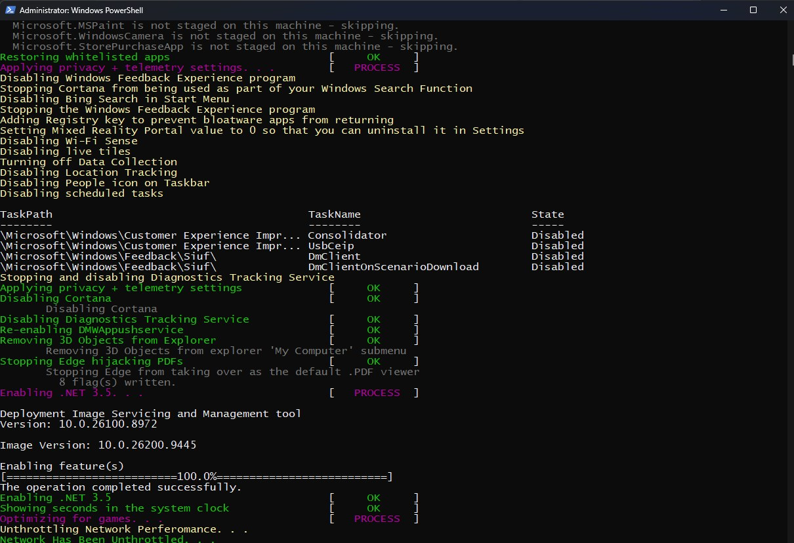
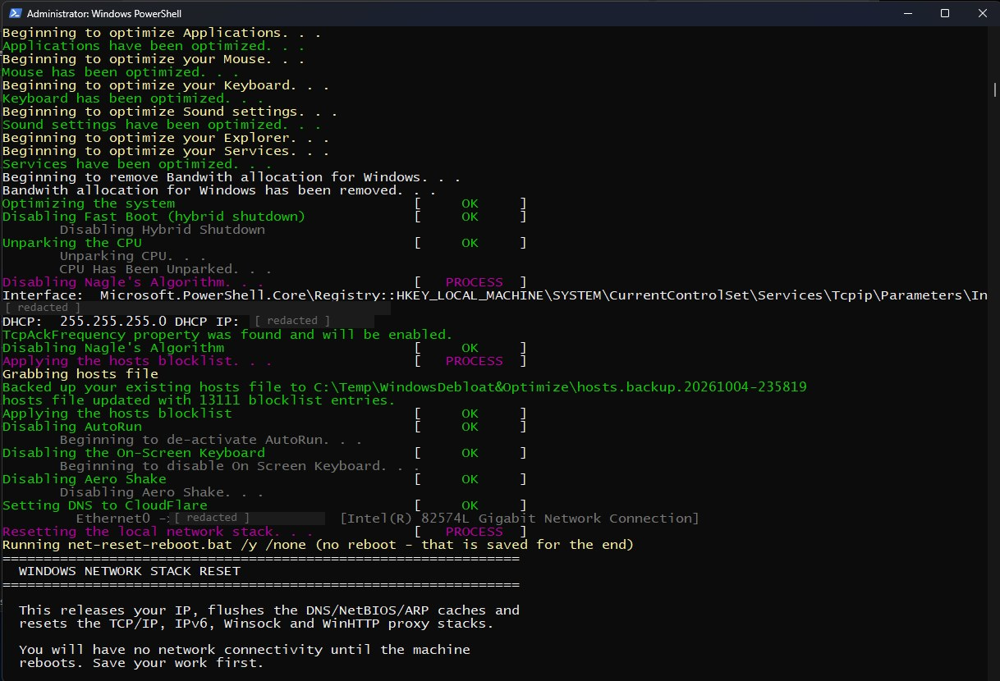
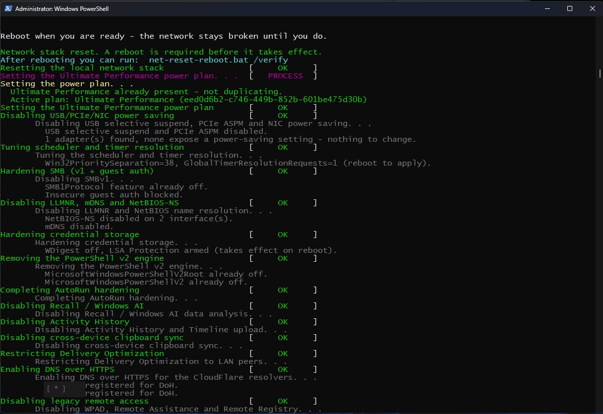
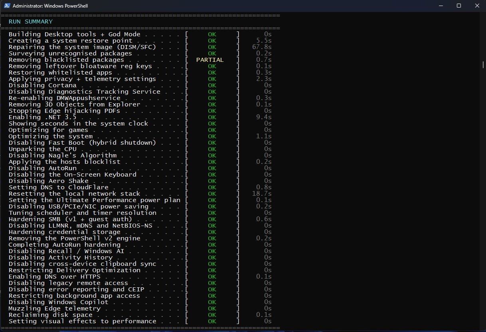

WindowsGG
winGG10&11.ps1
PowerShell · Windows Internals · Registry · Security Hardening · Gaming Performance
Status: [ ACTIVE ]
WindowsGG is a one-shot baselining script for a freshly installed Windows 10 or 11 gaming PC. It debloats, applies a set of performance, privacy and security-hardening changes, and writes the three Utility Tools and a God Mode folder to the Desktop on its way out.
It is the third generation of the Debloat & Optimize line, which is now archived. Every step runs through one harness that prints OK, PARTIAL or ERROR, counts and surfaces errors per step instead of swallowing them, times each step and ends with a run summary. A full transcript of every run is kept.
It is built on Sycnex's Windows10Debloater (MIT) and uses Dan Pollock's hosts file for the blocklist step, both credited in the script.
Key Features
- Debloat with a whitelist sweep for all users plus curated sponsored-app patterns, removing both per-user and provisioned packages
- Two protection lists (89 entries) checked before anything is removed, keeping Xbox and Game Pass, codecs, accessibility tools, Store apps and Edge (WebView2)
- Privacy and telemetry: Recall and Windows AI, Copilot, Cortana, activity history, error reporting and Edge telemetry turned off
- Gaming and performance: GPU priority, MMCSS and GameDVR tuning, CPU unparking, Nagle-related changes, High Performance power plan
- Security hardening: SMBv1 and guest auth, LLMNR, mDNS and NetBIOS-NS, WDigest off, LSA protection on, PowerShell v2 engine removed, AutoRun and legacy remote access disabled
- Network: hosts blocklist, encrypted DNS over HTTPS, network stack reset
- Safety: restore point first, hosts file backed up and swapped in only after verification, verified idempotent across consecutive runs
What This Project Demonstrates
- PowerShell automation at scale with a consistent step harness and reporting
- Windows hardening grounded in real attack surface (SMB, name-resolution poisoning, credential storage)
- Debugging and fixing long-hidden defects across generations of a script
- Honest documentation of known limits and a diagnosed antivirus false positive
- Safe testing habits: validated in a VMware guest before any host use
Notes
Windows Defender flags the script as a trojan; it is a diagnosed false positive (the hosts blocklist and the embedded cleanup payload together trip the classifier, either one alone scans clean). It has been validated across 13 runs in a VMware guest, not yet on real hardware, and it makes substantial, persistent changes, so it is meant for a freshly reformatted machine. It succeeds the archived Windows 10/11 Debloat & Optimize.
Screenshots





